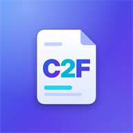

Problem
Online converters and AI tools need a good connection, can cost money, and upload your files to someone else's server.

Convert2FileConvert2File helps organize learning materials into structured documents, study guides, and quiz drafts—all from one Android app.
Many students keep their lessons as PDF, Word and PowerPoint files and study on a phone with limited or unstable internet. Convert2File was created to turn those files into clean, ready-to-study materials directly on the phone.
Online converters and AI tools need a good connection, can cost money, and upload your files to someone else's server.
Convert2File converts files, builds study guides and quizzes, and runs an offline AI model on your own phone, so your work stays on your device.
Students and teachers who need to turn lessons and reviewers into study materials quickly, even without internet.
Use supported learning materials such as PDF, DOCX, and PPTX as a starting point.
Prepare structured documents, study guides, or editable quiz drafts.
Review generated sections before saving or sharing your output.